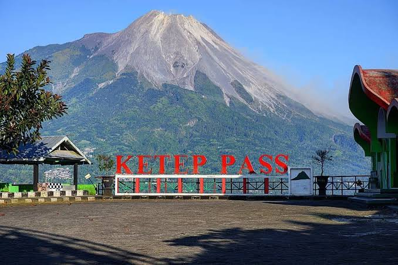
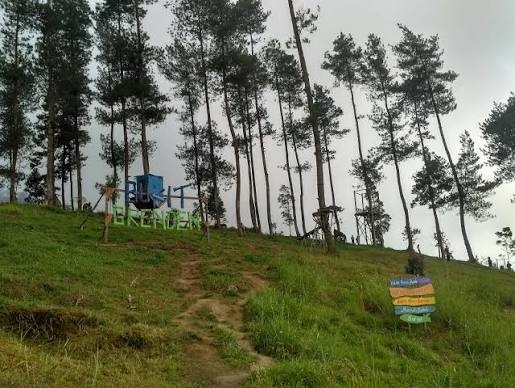

Eksplorasi
Destinasi Sekitar Dusun Gerdu

Spot Foto & Alam
Top Selfie Pinusan Kragilan
Kawasan hutan pinus yang tertata rapi dengan jalur lurus estetik, jembatan gantung, dan berbagai wahana foto selfie berlatar alam pegunungan yang sejuk.

Gardu Pandang & Edukasi
Ketep Pass
Obyek wisata alam berbasis edukasi dan gardu pandang populer untuk menikmati keindahan panorama Gunung Merapi dan Merbabu serta fasilitas bioskop vulkanologi.

Wisata Alam & Spot Foto
Bukit Grenden
Destinasi wisata alam hutan pinus di lereng Gunung Merbabu yang menawarkan panorama menawan, udara sejuk, serta beragam spot foto unik seperti rumah pohon.